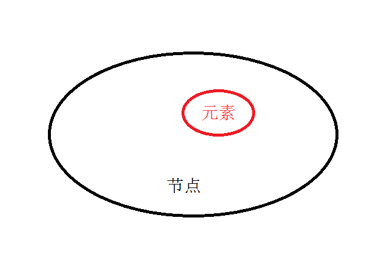
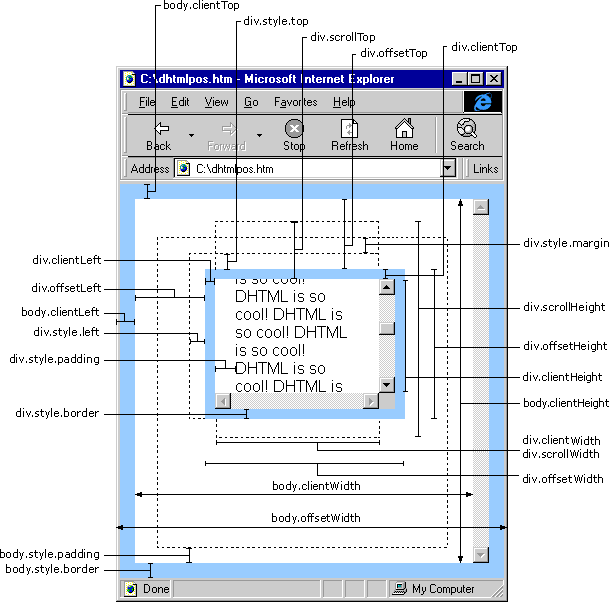

node节点（更详细的获取（设置）页面中所有的内容）
根据 W3C 的 HTML DOM 标准，HTML 文档中的所有内容都是节点：
元素是节点的别称，节点包含元素当然节点还有好多细化的种类；

根节点：root>>>>HTML没有父节点；
节点操作：（通过父子系关系）
childNodes 获取当前元素的所有子节点；
nodeType 节点种类，返回值是数字；
nodeValue 获取（文字）节点的文本内容；
nodeName 返回node节点名称（#text，注释， 标签....）；
一个可以找出元素节点的方法；
常见的节点类型：
nodeType值 | 含义 |
1 | 元素（DIV、BODY、LI、SPAN....... ） |
2 | 属性代表属性节点 （class，src，href） |
3 | 文本节点（text节点） |
8 | 代表注释节点 |
9 | 代表document节点； |
innerHTML和nodeValue;(当innerHTML和nodeValue分别作为左值的时候)
box.innerHTML = '<strong>abc</strong>';
box.childNodes[0].nodeValue = '<strong>abc</strong>';
innerHTML会将标签解析；
nodeValue不会进行解析，会将标签名转译成字符串，直接输出；
outerHTML/innerText (非W3C)
attributes属性
var oBox = document.getElementById('box');
console.log(oBox.attributes) // 获取所有，该节点的属性信息；
console.log(oBox.attributes.length); //返回属性节点个数
console.log(oBox.attributes[0]); //返回第一个属性节点
console.log(oBox.attributes[0].nodeType); //2，属性
console.log(oBox.attributes[0].nodeValue); //属性值
console.log(oBox.attributes['id']); //返回属性为 id 的节点
console.log(oBox.attributes.getNamedItem('id')); // 获取 id 的节点；
attributes属性 一般只用作获取，设置使用setAttribute()
父子节点 兄弟节点
父（parent）、子（child）和同胞（sibling）等术语用于描述这些关系。父节点拥有子节点。同级的子节点被称 为同胞（兄弟或姐妹）。
childNodes 获取当前元素节点的所有子节点
firstChild 获取当前元素节点的第一个子节点
lastChild 获取当前元素节点的最后一个子节点
previousSibling 获取当前节点的前一个同级节点
nextSibling 获取当前节点的后一个同级节点
****以上五中方法都包含空白文本节点
firstElementChild 获取当前元素节点的第一个元素子节点
lastElementChild 获取当前元素节点的最后一个元素子节点
ownerDocument 获取该节点的文档根节点，相当与 document
parentNode 获取当前节点的父元素
创建文档碎片
var cache = document.createDocumentFragment();
for( var i = 0 ; i < 1000; i ++ ){
var opt = document.createElement("input");
opt.type="button";
opt.value = "删除";
cache.appendChild(opt);
}
document.body.appendChild(cache);
++DOM尺寸和位置
box.style.width box.style.height | 只能获取到内联style属性的CSS样式中的宽和高，如果有，获取;如果没有，则返回空 |
getStyle(box,"width") getStyle(box,"width") //如下getStyle方法的封装 | 通过计算获取元素的大小，无关你是否是行内、内联或者链接，它经过计算后得到的结果返回出来。如果本身设置大小，它会返回元素的大小，如果本身没有设置，非IE浏览器会返回默认的大小，IE浏览器返回auto。 |
box.clientWidth box.clientHeight | 返回了元素大小，但没有单位，默认单位是px，如果设置了其他的单位，比如100em之类，返回出来的结果还会转换为px像素（不含边框） |
box.scrollWidth box.scrollHeight | 获取滚动内容的元素大小（当元素出现滚动条时，此属性指全部滚动内容的宽高） 返回了元素大小，默认单位是px。如果没有设置任何CSS的宽和高度，它会得到计算后的宽度和高度 |
box.offsetWidth box.offsetHeight
| 返回了元素大小，默认单位是px。如果没有设置任何CSS的宽和高度，他会得到计算后的宽度和高度 包含盒模型中除margin以外的宽高（包含边框） 最稳定，使用最频繁 |
以上这三对方法都是只读的
- 获取非行内样式（兼容问题）
function getStyle(obj,attr){ //获取非行间样式，obj是对象，attr是值
if(obj.currentStyle){ //针对ie获取非行间样式
return obj.currentStyle[attr];
}else{
return getComputedStyle(obj,false)[attr]; //针对非ie
};
};
位置坐标
box.clientLeft box.clientTop | 获取左边框和上边框的宽度 |
box.offsetLeft box.offsetTop | 获取元素当前相对于offsetParent父元素的位置 |
box.scrollTop box.scrollLeft | 获取滚动内容上方的位置(就是隐藏的内容的高度) 获取滚动内容左方的位置 |
offsetParent 这个属性的返回值是它根据谁定位的，如果它的所有父元素都没有定位，那么返回body

练习
1、位置动画
2、全选
3、TAB切换
4、延迟弹出提示框